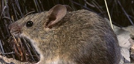

Chance and necessity in evolution is a fundamental theme of biology. Adaptation is the deterministic part of this process: driven by natural selection, populations establish functional changes in response to changes in their environment and ecology. How can we understand this dynamics starting from its molecular basis, which lies in genes and their interactions? How do adaptation and functional innovation take place in the sea of stochastic changes of molecular evolution? These are the central questions addressed by CRC / SFB 680. more
The Collaborative Research Centre is funded by Deutsche Forschungsgemeinschaft (DFG).
Recent research highlights
Quantifying the adaptive potential of an antibiotic resistance enzyme appeared in PLoS Genetics (2012) |
Gene Transfer from Bacteria and Archaea Facilitated Evolution of an Extremophilic Eukaryote appeared in Science (2013) |
 A Toxoplasma gondii pseudokinase inhibits host IRG resistance proteins appeared in PLoS Biology 10, e1001358 (2012) |